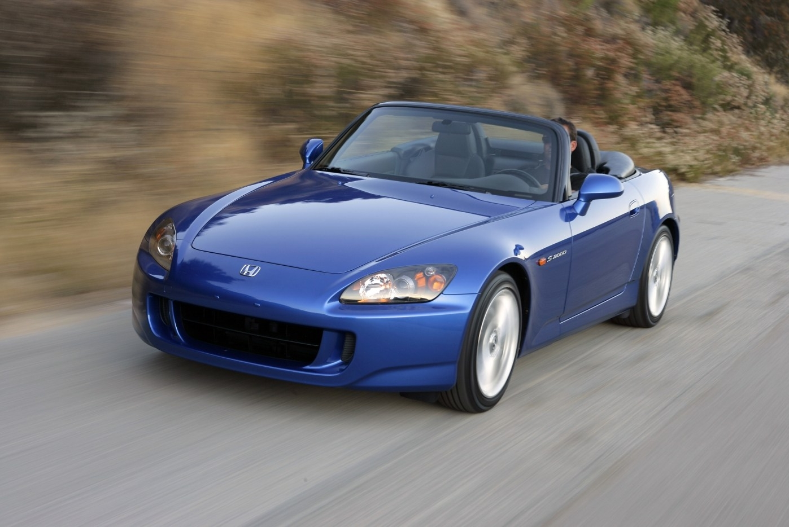

Honda
Civic and S2000
Honda Civic

Civic Characteristics
- Model: Civic (2000 hatchback DX)
- Body type: 2-door hatchback
- Drive: Front-wheel drive
- Transmission: Manual / Automatic
- Focus: Economy and reliability
About Civic
Honda Civic is a practical daily car with low fuel consumption and affordable maintenance. It became one of the most recognizable Japanese compact models.
Honda S2000

S2000 Characteristics
- Model: S2000 roadster
- Body type: 2-door convertible
- Drive: Rear-wheel drive
- Transmission: 6-speed manual
- Focus: Sport handling and high-rev engine
About S2000
Honda S2000 is a lightweight sports car known for sharp steering, balanced chassis, and a naturally aspirated engine that loves high RPM.